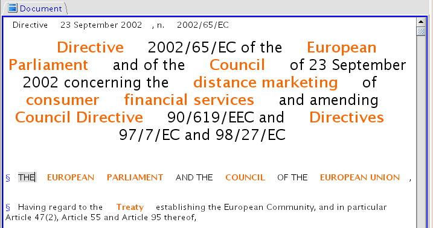
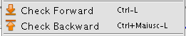

Dalos Documents markup
With an opened Document
double-click one of the terms in the Terms panel or right-click to choose the specific lexical variant:
this will insert the selected lexicalization at the cursor position
or markup the selected text if some text has been previously selected;
Marked-up terms in documents are highlighted in red and keep their link to the DALOS knowledge resource

It is possible to search for domain terms in the opened document clicking on

Check Forward or Check Backward from the DALOS Menu or from the DALOS Toolbar or
using the keyboard shortcuts Ctrl-L and Ctrl-Shift-L
This performs a search on the lexicon using the parameters specified in the Terms Panel